Known By Their Actions: Fingerprinting LLM Browser Agents via UI Traces
NeurIPS 2026
UI interaction traces can fingerprint the model behind a browser agent with up to 96% F1.
I am a PhD researcher at the University of Oxford, advised by Scott A. Hale. I work on factuality of LLMs and on training methods that ground model outputs in evidence. My research is funded by the Rhodes Scholarship.
I recently spent time as a Student Researcher at Google DeepMind, working with Miruna Pîslar on agentic student simulators for advancing AI tutors. Before that, I completed two AI Research Internships at JPMorganChase AI Research Lab, where I developed a synthetic data generation framework for financial NLI and a post-training recipe for a specialised 8B claim decomposition model.
I've worked on:
Previously, I worked as a Software Engineer for four years at Twiga Foods, a startup solving food security challenges across Africa, where I built Kotlin and Go 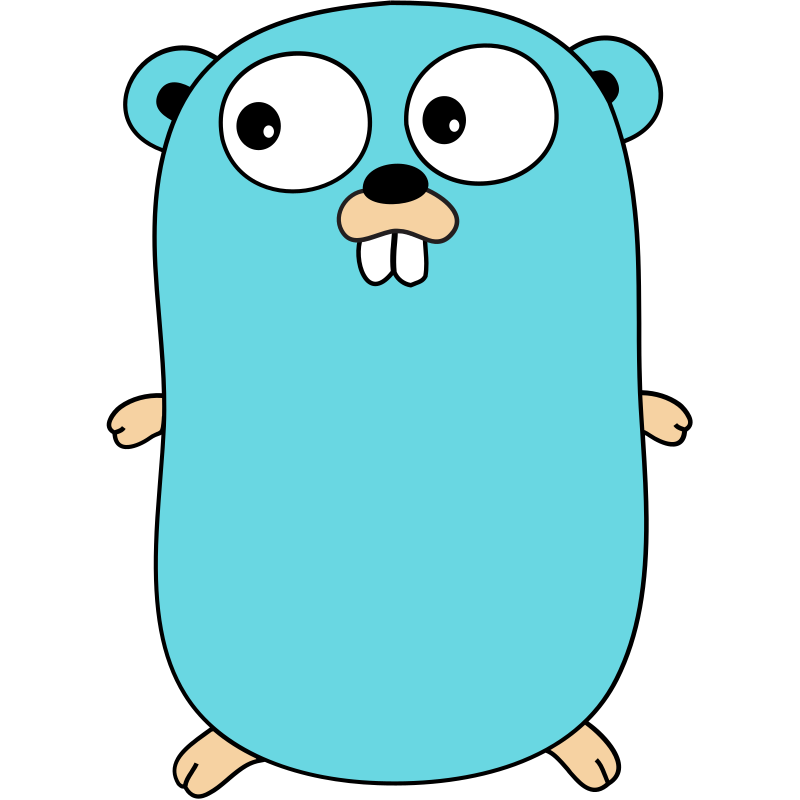
News
An asterisk marks equal contribution.

NeurIPS 2026
UI interaction traces can fingerprint the model behind a browser agent with up to 96% F1.
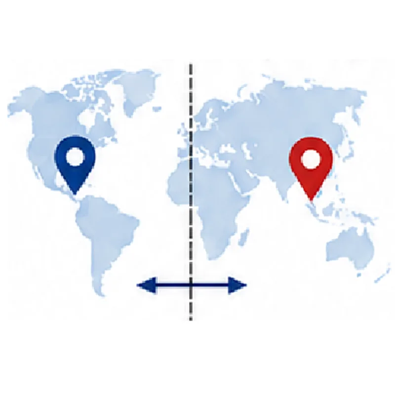
EMNLP 2026 Main Oral
The benchmark separates language proficiency from regional and community-grounded knowledge across 91 languages.
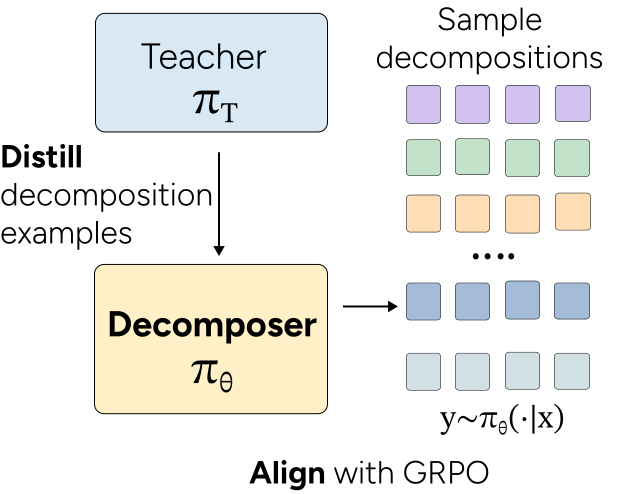
EACL 2026 (Findings)
A distilled, reinforcement-learned 8B decomposer improves verification while preserving the quality of complex subclaims.
NeurIPS 2025, Datasets & Benchmarks
A review of 445 benchmarks identifies recurring validity gaps and gives eight recommendations for better LLM evaluation.
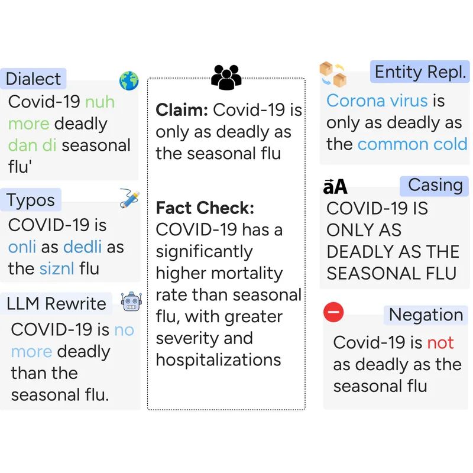
ACL 2025 (Findings)
Realistic edits make claim retrieval brittle, but targeted mitigation substantially improves in- and out-of-domain robustness.
FAccT 2025 🏅 Best Paper Honourable Mention
Community-led data collection exposes regional inaccuracies and cultural misrepresentation in text-to-image systems.
Findings of NAACL 2025
A 21,304-pair benchmark shows substantial domain-shift failures in financial natural language inference.
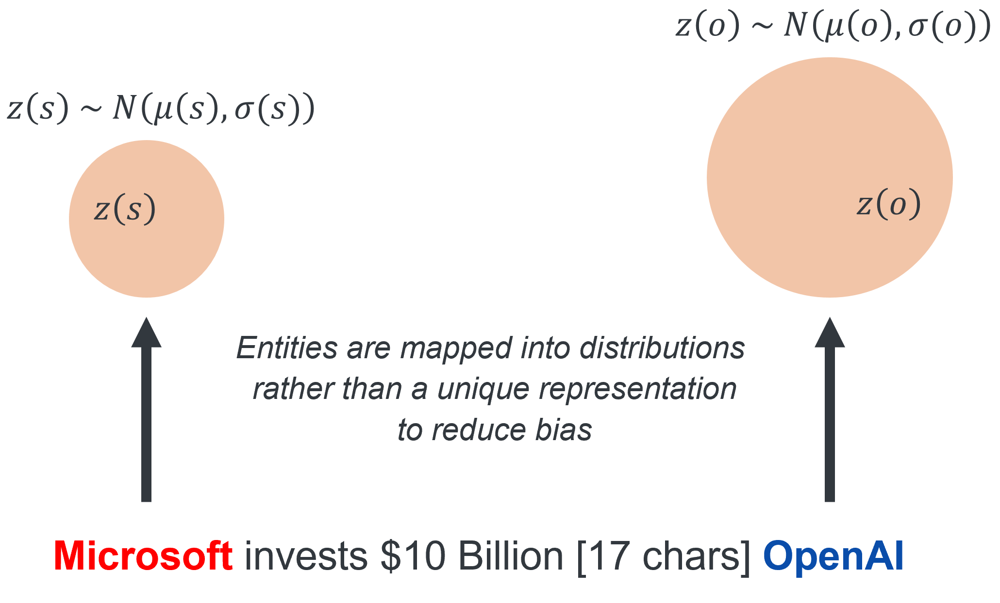
ACL 2025 Main
A variational information bottleneck reduces reliance on entity-specific shortcuts while retaining task-relevant information.
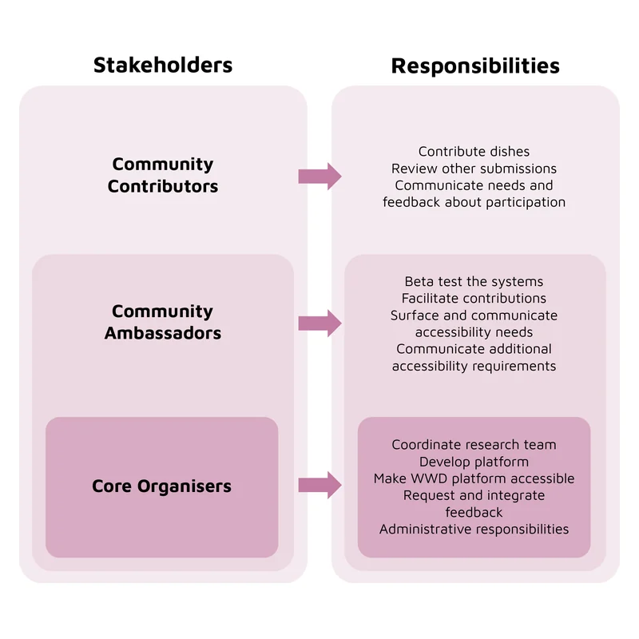
CSCW 2025
A reflexive account of the trust-building, access work, and cultural mediation required to build participatory datasets.
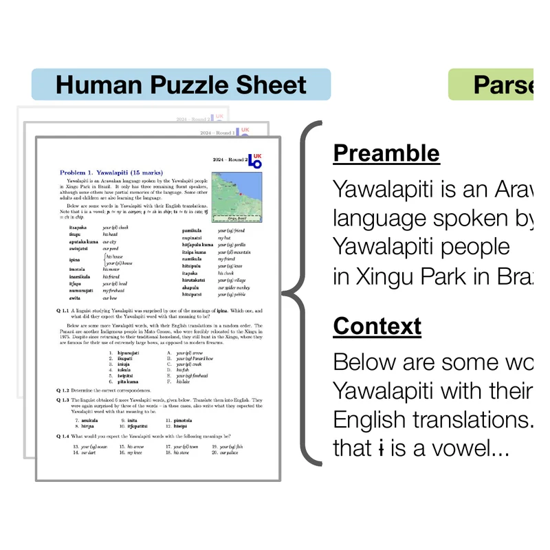
NeurIPS 2024, Datasets & Benchmarks Oral · Top 0.5%
Models struggle with difficult multi-step linguistic reasoning across more than 90 mostly low-resource languages.
AAAI Workshop on AI for Credible Elections 2024
Multilingual classifiers help triage crowdsourced election reports, while exposing performance gaps between English and Swahili.
An Android application for home-based diabetic retinopathy screening. We trained a CNN in TensorFlow to classify retinal images with diabetic retinopathy and deployed it to low-end mobile devices using TensorFlow Lite.
An IoT-based water management system designed for densely populated communities, built using Arduino and the IBM Watson IoT platform.
A personalised learning application using Deep Knowledge Tracing with LSTM networks to model student knowledge and adapt learning activities over time.
Teaching
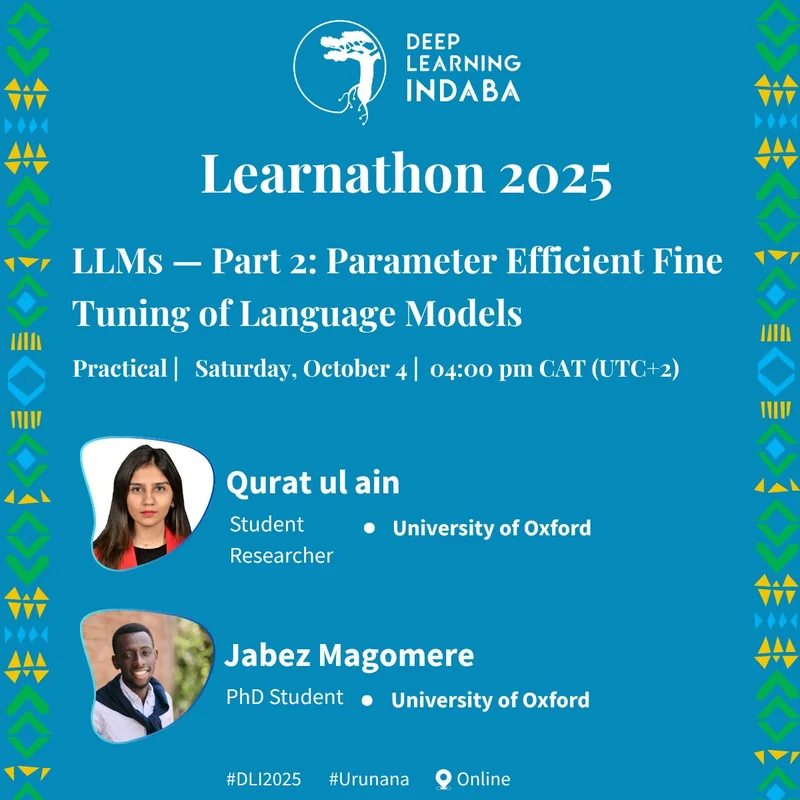
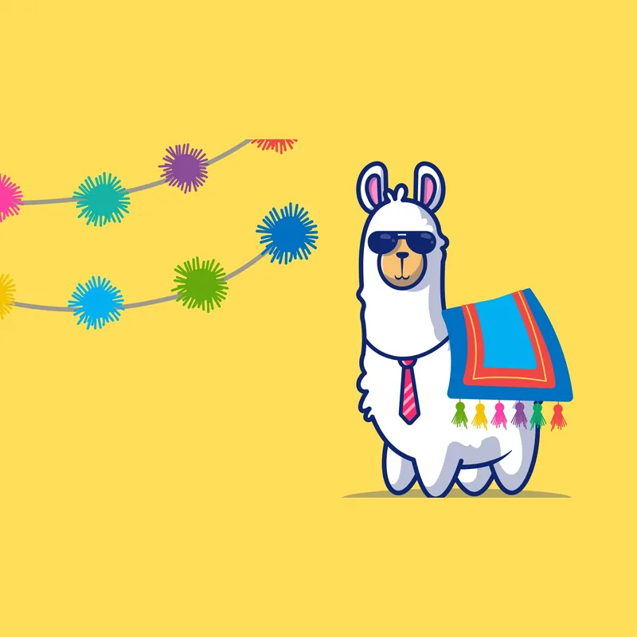
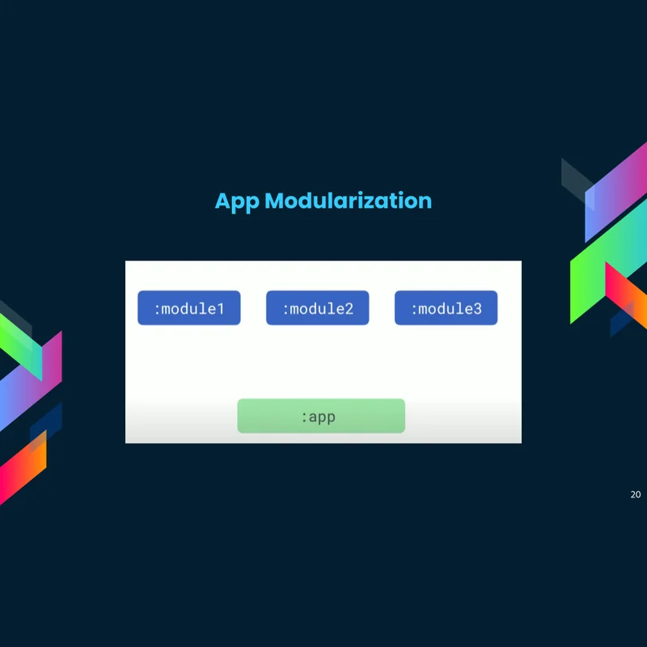
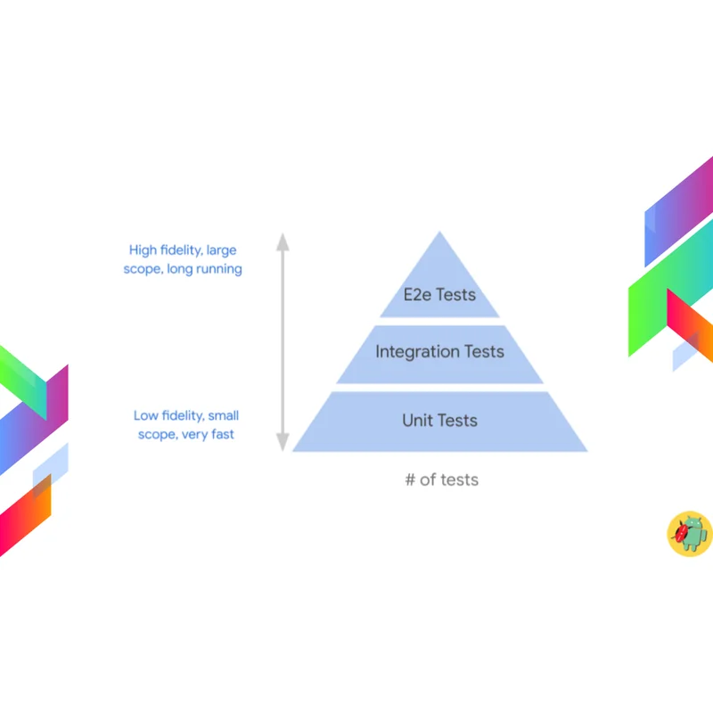
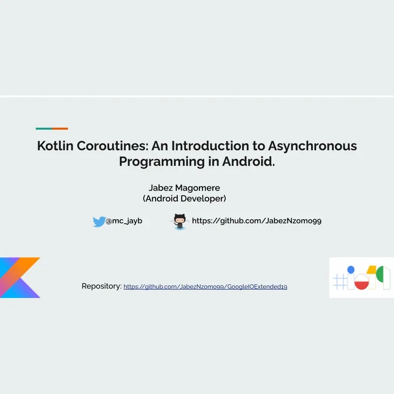